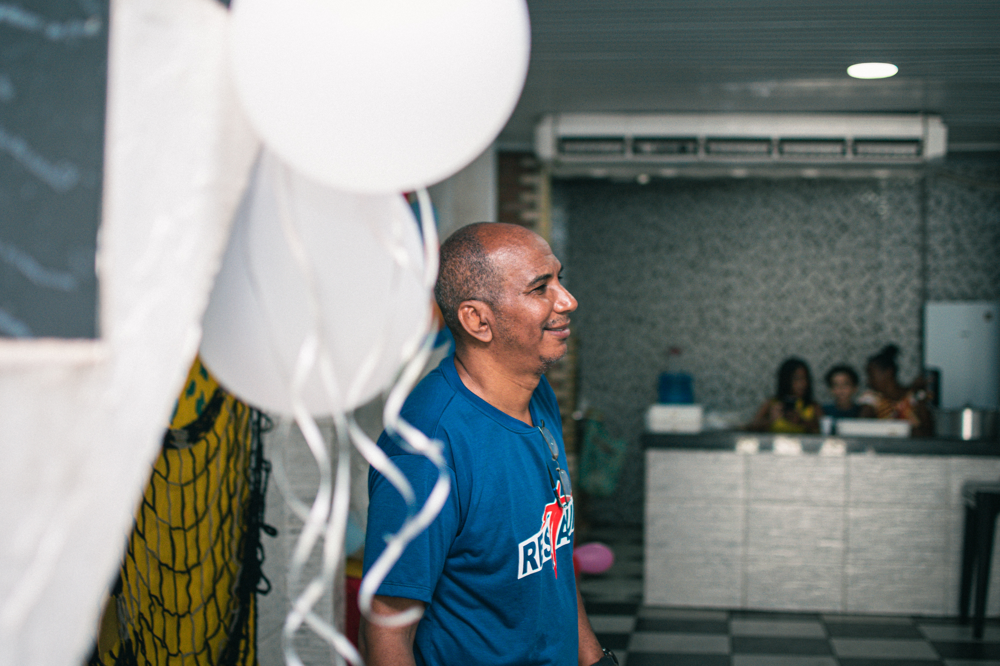
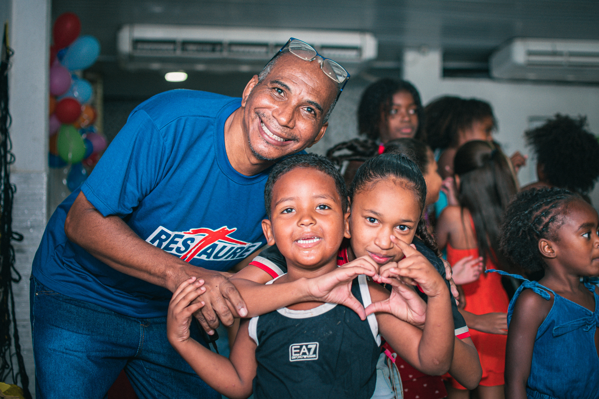

Elias Moreira
“O que aprendi com o Wagner?”
PERSEVERANÇA

Abertura da homenagem
Há pessoas que passam pela nossa caminhada. E há pessoas que deixam marcas.
Esta homenagem reúne 15 mensagens de pessoas que, de alguma forma, tiveram suas vidas tocadas pela caminhada de Wagner.
São palavras de gratidão, carinho, aprendizado e inspiração.
“O que aprendi com o Wagner?”
“O que aprendi com ele?”


“Qual atitude dele mais me inspira?”
“Porque inspirar também é uma forma de transformar.”
“Por que sou grato(a) por ele?”


“O que desejo para o próximo ciclo dele?”

“O que o Wagner representa para mim?”
“O bem continua, mesmo quando o caminho fica difícil.”
“Qual atitude dele mais me inspira?”


“O que aprendi com ele?”
“Por que sou grato(a) por ele?”


“O que desejo para o próximo ciclo dele?”
“Algumas pessoas ensinam mais pelo exemplo do que pelas palavras.”
“O que o Wagner representa para mim?”


“Qual atitude dele mais me inspira?”
“O que aprendi com ele?”


“O que desejo para o próximo ciclo dele?”
“Por que sou grato(a) por ele?”

União
Mapa da gratidão

“A distância pode separar lugares. Mas não separa a gratidão.”
Impacto
A dedicação de Vagner não é apenas um trabalho. É presença, cuidado, persistência e amor em cada gesto. Ele tem caminhado com a comunidade, apoiando crianças, gerando acolhimento e dando esperança a quem precisa.
Seu exemplo mostra que transformação real acontece quando se escolhe servir com coração, com constância e com olhar atento para as pessoas.
15 mensagens.
15 histórias.
Um sentimento em comum: gratidão.
Com carinho,
seus voluntários.
